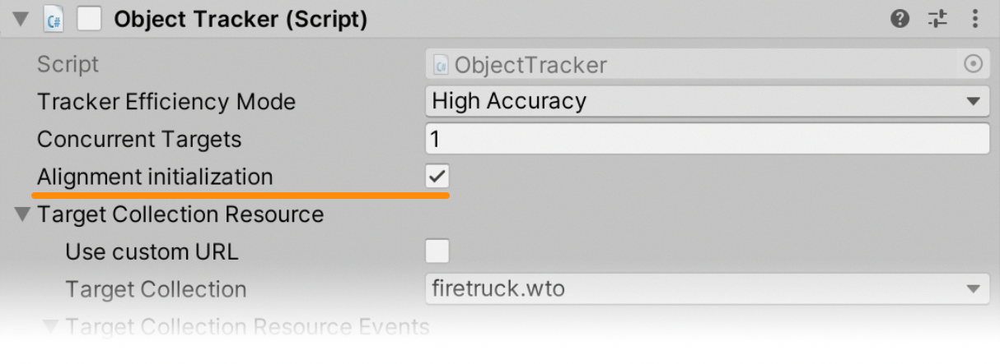
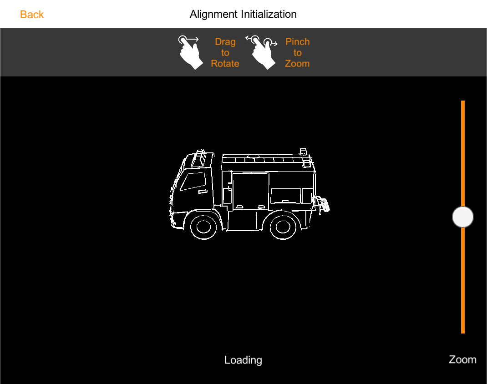
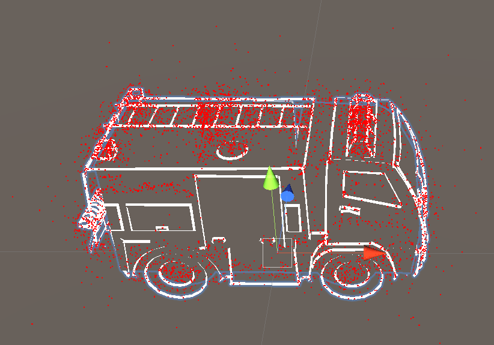
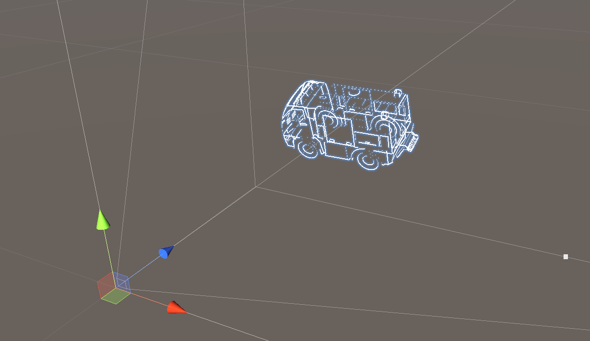

Object Tracking
Introduction to Object and Scene Recognition
Object Recognition and Tracking extend the capabilities of the Wikitude SDK to recognize and track arbitrary objects for augmented reality experiences. The feature is based on Wikitude's SLAM engine that is used throughout the SDK for any kind of tracking the environment. Object Recognition and Tracking let you detect objects and entire scenes, that were pre-defined by you. Suitable objects include
- Toys
- Monuments and statues
- Industrial objects
- Tools
- Household supplies
Recognition works best for objects that have only a limited number of changing/dynamic parts.
Scene Recognition
With version SDK 8 the object recognition engine can also be used to recognize larger structures that go beyond table-sized objects. The name Scene recognition reflects this in particular. The new image-based conversion method allows for Object targets that are a lot larger in size, that can be successfully recognized and tracked.
- Rooms
- Face of buildings
- Squares and courtyards
Make sure to read the chapter on how to create Object Targets before using Object Recognition on your own.
Object Tracking in Unity
Before proceeding with the Object Tracking sample, please make sure you are familiar with how Image Tracking works first by reading about the Image Tracking samples. Most concepts described there work in a similar way for Object Tracking.
ObjectTracker Prefab
To add a tracker prefab to the scene, simply drag the ObjectTracker prefab into the scene hierarchy.
An ObjectTracker itself needs a Wikitude Object Collection (.wto file) which contains information needed to detect the reference objects. Target collections can be generated and downloaded from Wikitude Studio - a free web based tool, that you can access with your developer account. You can use the .wto file in the same way as .wtc files are used for the ImageTracker.
Recognition events also work exactly like recognition events for the ImageTracker.
Define custom augmentations
Because an ObjectTracker can only recognize and track a single object at a time, you can define augmentations either by defining a Drawable prefab in the ObjectTrackable, or by placing them directly as child objects to the trackable and enabling Auto Toggle Visibility.
In the Object Tracking - Object Tracking scene, the Drawable prefab workflow is illustrated. A FiretruckAugmentation prefab was created in the SamplePrefabs folder and assigned to the ObjectTrackable. The transform of the prefab has been modified so that the augmentations will match the real object during tracking.
Within the FiretruckAugmentation prefab you will also find the FiretruckOccluder GameObject which contains two meshes that are used as occluders. You can read more about occluders and how they work in Unity here.
Extended Tracking for Objects
Extended tracking is an optional mode you can set for each target separately. In this mode the Wikitude SDK will try to continue to scan the environment of the user even if the original target object is not in view anymore. So the tracking extends beyond the limits of the original target object. The performance of this feature depends on various factors like computing power of the device, background texture and objects.
To enable Extended Object Tracking, select the ObjectTrackable and enable the Extended Tracking option in the inspector. In the Targets For Extended Tracking you can specify which targets should be extended. If you want all targets to be extended, simply set 1 in the Size field and * in the Element 0 field.
Alignment initialization
The alignment initializer can be used for objects that are hard to recognize automatically (usually objects that have no clear texture or texture is unreliable). An unreliable texture could be an object that has different colors or areas that keep changing (e.g. mud, stickers,...). The alignment initializer adds an element in the UI that signals the user from which viewpoint (perspective) the object can be recognized and tracking can be started. This visual guide can be helpful to communicate what the user is expected to do. The actual UI implementation of the alignment initializer can be freely chosen by the developer and can range from showing an outline to a rendered 3D view that can be manipulated by the user.
To get a better understanding of how to achieve this the sample scene included in the Unity Plugin is described in the following sections.
Scene Setup
To assist the SDK in finding the object, the ObjectTracker needs to be configured to use Alignment initialization in the Inspector.

Once this is done, the new ObjectTracker.UpdateAlignmentPose method can be called with a Matrix4x4 pose that provides a hint to the SDK as to where the object is located in the scene. This pose represents the relative position of the object to the camera.
ObjectTracker in your scene and that the .wto file being used only contains a single object.
The rest of the sample scene is very similar to the other object tracking samples, but instead of recognition working automatically, the user needs to align a silhouette of the target object with the real-world object. The firetruck target object is used as a target in this example.

Silhouette Rendering
To properly display the silhouette, a separate camera rig is created, as described in the screenshot below.
The Alignment Initializer GameObject contains a Camera component that will render the silhouette on top of the camera frame.
Additionally, this GameObject contains the AlignmentInteractionController script, which will manage the sample.
The Alignment Drawable Firetruck GameObject controls the relative pose of the silhouette to the camera. The user is allowed to move and rotate this GameObject and its transform will be sent every frame to the SDK as a hint.
Silhouette Alignment
Finally, the firetruck_alignment GameObject is used to align the rotation, position and scale of the 3D model to the point cloud from the associated .wto file.
The best way to do this alignment is to make sure that both the Alignment Initializer and the Alignment Drawable Firetruck transforms are set to identity. After that, simply enable the point cloud visualization from the corresponding ObjectTrackable and align the Firetruck Transform to match.

You can then move the Alignment Drawable Firetruck GameObject back to a position in front of the Alignment Initializer camera. This will make sure that the initial pose is something reasonable and users don't need to spend too much time doing any additional adjustments.

Once the scene was set up in the way described above, we just need to pass the Alignment Drawable Firetruck transform to the SDK:
private void Update() {
if (_recognizedTargetObject != null) {
/* No need to send the pose if the object is being tracked */
} else {
/* The pose of the alignment drawable is sent to the object tracker, to help it find the object in the desired pose. */
TargetObjectTracker.UpdateAlignmentPose(Matrix4x4.TRS(transform.localPosition, transform.localRotation, transform.localScale));
}
}